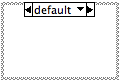
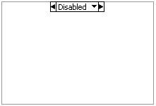
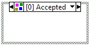

Open example�
Open example�
 Find related examples
Find related examples
A disable structure contains multiple subdiagrams of which exactly one compiles and executes. The subdiagram to execute is determined at compile time. Code within the inactive subdiagrams does not execute at run time or compile. You can use disable structures to make sections of code on the block diagram inactive.
The Conditional Disable structure, shown as follows, has one or more subdiagrams, or cases, exactly one of which LabVIEW uses for the duration of execution, depending on the configuration of the conditions of the subdiagram. When compiling, LabVIEW does not include any code in the inactive subdiagrams of the Conditional Disable structure.

Use the Conditional Disable structure to define conditions in which specific code compiles and executes. For example, if one section of a VI is target-specific, you can put this code in a Conditional Disable structure and configure it to run on the specific target. You might configure a Conditional Disable structure for Windows, Mac, Unix systems or FPGA targets.
If you convert from a Conditional Disable structure to a Diagram Disable or Type Specialization structure, the conditions of the Conditional Disable structure do not transfer to the Diagram Disable or Type Specialization structure.
Refer to the Conditional Disable Structure VI in the labview\examples\Structures\Disable Structures directory for an example of using Conditional Disable structures.
Open example�
Find related examples
In the Diagram Disable structure, shown as follows, LabVIEW does not include any code in the Disabled subdiagrams when compiling.

Use the Diagram Disable structure if you want to disable specific code on the block diagram so that it does not compile at run time. For example, you can use the Diagram Disable structure as a debugging tool to comment out code, replace code, and compile a VI without deleting the code in the Disabled subdiagram of the structure.
 |
Note��If you want to enable a section of code only when certain conditions are met, use the Conditional Disable structure. |
Refer to the Diagram Disable Structure VI in the labview\examples\Structures\Disable Structures directory for an example of using Diagram Disable structures.
Open example�
Find related examples
The Type Specialization structure, shown as follows, has one or more subdiagrams, exactly one of which LabVIEW compiles and executes, depending on the order and the compilation result of the subdiagram. When compiling and executing, LabVIEW does not include any code in the inactive subdiagrams of the Type Specialization structure.

Use the Type Specialization structure to customize sections of code in a malleable VI (.vim) for specific data types or to force a malleable VI to accept only a subset of the acceptable data types. For example, you can use the Type Specialization structure to configure a malleable VI to behave differently when the input data is an integer versus an array of integers so that the malleable VI works in an expected way for both data types.
Refer to the labview\examples\Malleable VIs\Type Specialization Structure\Malleable VIs - Type Specialization Structure.lvproj for an example of using Type Specialization structures.
Open example�
Find related examples
When LabVIEW loads a VI with user-defined objects, such as subVIs and type definitions, in the Disabled subdiagram of a Diagram Disable structure or in the inactive subdiagrams of a Conditional Disable or Type Specialization structure, LabVIEW does not load these objects into memory. However, when you display the block diagram of the VI, if LabVIEW cannot find the objects, the missing objects appear with a question mark icon. The VI does not break because LabVIEW does not include the code when compiling and executing the VI. Furthermore, LabVIEW does not automatically search for these missing objects when you enable the subdiagram that contains the subVI.
To force LabVIEW to locate missing subVIs in a Diagram Disable structure, enable the subdiagram that contains the missing subVI and save the VI that calls the subVI. The next time you open the VI that calls the subVI, LabVIEW searches for the subVI. You then can disable the subdiagram that contains the subVI again.
|
Note��LabVIEW checks the syntax of code in inactive subdiagrams. However, broken code within the inactive subdiagrams does not prevent the VI from compiling and executing. |
|
Note�� Like a Case structure, the disable structures support tunnels. However, by default you do not have to wire the output tunnels of disable structures in every case. All tunnels not connected by a wire use the default value for the tunnel data type. You can configure the tunnels to wire the input and output tunnels automatically in unwired cases. |
Disable structures determine which sections of code are included in built applications. If a VI is only called in a disabled diagram, it will be excluded from the built application. LabVIEW does not reevaluate the condition on the Conditional Disable structure or the compilation result of the Type Specialization structure after an application has been built.